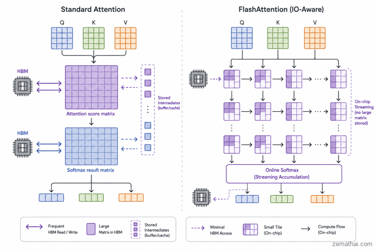
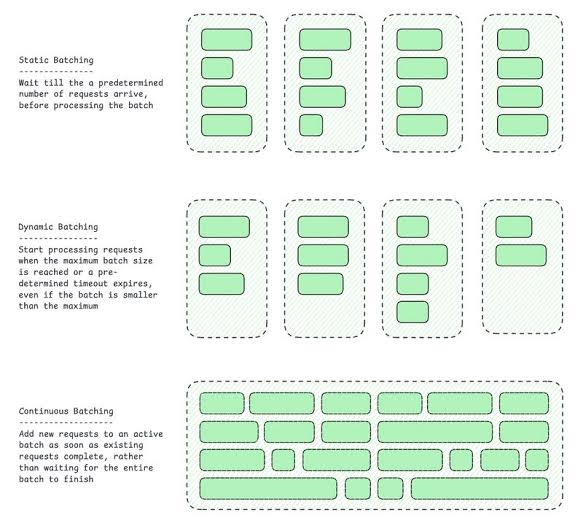

Serving: FlashAttention, continuous batching and PagedAttention
Module thesis: Lecture 27/28 sized the KV cache per user. A server holds many users at once, so its real capacity is the KV pool, and three mechanisms decide how much of that pool does useful work: the kernel that computes attention without spilling the score matrix to memory, the scheduler that chooses who runs each step, and the allocator that places each sequence's cache in memory.
Prerequisites: Prefill vs decode and the memory wall · Attention and the KV cache
Before we start
An A6000 (48 GB) serves Llama-3-8B in BF16. About 25 GiB is left for the KV cache: ≈ 200K tokens, or ≈ 25 users at the full 8K window. Why does a naive server fit far fewer?
1. FlashAttention: never store the score matrix
Attention is limited by memory traffic, not FLOPs. A standard kernel writes the \(n \times n\) score matrix to HBM, reads it back for softmax, writes the probabilities, then reads them again to weight \(V\). FlashAttention computes the same result tile by tile in on-chip SRAM and never stores the matrix.

Figure: ZeroMathAI, FlashAttention IO-Awareness.
| Memory on an A100 | Size | Bandwidth |
|---|---|---|
| HBM | 40–80 GB | 1.5–2.0 TB/s |
| SRAM | 192 KB per SM × 108 SMs ≈ 20 MB | ≈ 19 TB/s |
- The matrix is the traffic. Lecture 27/28 §4: one head's 4,096 × 4,096 score matrix is 32 MiB in FP16, 2 GiB at 32K tokens. A standard kernel moves it through HBM several times, per head, per layer.
- SRAM is 10× faster but 1,000× smaller. The matrix cannot fit there, so the work has to come in tiles.
1.1 Tiling
\(z\) is attention's output: for each query, the weighted average of the value vectors, \(z = \sum_j p_j v_j\). It is the only result the next layer needs. (The FlashAttention paper writes it \(O\).)
- Load a block of \(Q\) rows and a block of \(K\), \(V\) rows into SRAM.
- Compute that tile's scores, its softmax contribution and its weighted values, all on chip.
-
Move to the next \(K\), \(V\) block. Only the output \(z\) goes back to HBM.
-
Extra memory falls from quadratic to linear in \(n\): no score matrix is ever materialised.
- FLOPs do not fall. Training's backward pass recomputes the scores instead of storing them, so it does slightly more arithmetic, and still runs faster.
1.2 Online softmax
The probabilities are never needed, only their weighted sum of values. Attention's output is \(z = \sum_j p_j v_j\), and the denominator of every \(p_j\) is the same row sum. So divide once, at the end:
FlashAttention keeps three running quantities per query row, and updates them block by block:
| Quantity | Meaning | Update when a block raises the max from \(m\) to \(m_{new}\) |
|---|---|---|
| \(m\) | largest score so far | \(m_{new} = \max(m,\ \max_j s_j)\) |
| \(\ell\) | sum of \(e^{s_j - m}\) so far | \(\ell \, e^{m - m_{new}} + \sum_j e^{s_j - m_{new}}\) |
| \(\tilde z\) | unnormalised output: sum of \(e^{s_j - m}\, v_j\) so far | \(\tilde z \, e^{m - m_{new}} + \sum_j e^{s_j - m_{new}}\, v_j\) |
- Why rescaling works: every old term was computed as \(e^{s - m}\). Multiplying by \(e^{m - m_{new}}\) turns it into \(e^{s - m_{new}}\), exactly what it would have been had the new max been known from the start.
- After the last block: \(z = \tilde z / \ell\). Each \(p_j\) existed only inside its tile, for one multiply-add, and was then discarded.
- Subtracting the max prevents overflow: \(e^{s - m} \le 1\), always.
- Training's backward pass needs the \(p_j\) again, so it keeps only \(m\) and \(\ell\) per row and recomputes \(p_j = e^{s_j - m} / \ell\) tile by tile (§1.1).
Worked example: scores [2, 1, 3, 5], values [10, 20, 30, 40], read in two blocks
| Step | Block | \(m\) | \(\ell\) | \(\tilde z\) |
|---|---|---|---|---|
| 1 | scores \([2, 1]\), values \([10, 20]\) | 2 | \(e^{0} + e^{-1} = 1.368\) | \(e^{0}\cdot 10 + e^{-1}\cdot 20 = 17.358\) |
| 2 | scores \([3, 5]\), values \([30, 40]\) | 5 | \(1.368\, e^{-3} + e^{-2} + e^{0} = 1.203\) | \(17.358\, e^{-3} + e^{-2}\cdot 30 + e^{0}\cdot 40 = 44.924\) |
Output: \(z = 44.924 / 1.203 = \mathbf{37.33}\).
Check, standard softmax on all four scores at once:
Same output; no full row of \(p\) was ever stored. The streaming \(\ell = 1.203\) is this sum measured from the max: \(178.61 / e^{5} \approx 1.203\).
Values here are 1-D for readability; with \(d_h\)-wide values, \(\tilde z\) and \(z\) are vectors and every coordinate follows the same steps with the same weights.
1.3 What it buys, and where
| Pros | Cons |
|---|---|
| Exact: the same output as standard attention, not an approximation | Hard to write: a hand-tuned kernel per GPU generation (FlashAttention-2 for Ampere, -3 for Hopper) |
| Faster: about 3× on GPT-2 training at 1K tokens in the original paper; 2–4× is typical, depending on GPU and length | Gains vary with hardware and sequence length |
| Long context fits: attention memory grows linearly in \(n\) |
- The win is largest in prefill and training, where \(n\) queries meet \(n\) keys.
- Decode has one query row, so its score row is tiny. Its cost is reading the KV cache (Lecture 27/28 §5.3), which is the problem the rest of this lecture manages.
2. Static batching wastes the GPU

- A static batch runs until its longest sequence finishes.
- Sequences that finish early leave idle slots; new requests wait for the whole batch.
- Dynamic batching starts a batch when it is full or a timeout expires, whichever comes first. Requests wait less, but each batch still runs to its longest sequence.
- Lecture 9/10 §1: online serving cannot wait for a full batch, so idle slots cost directly in occupancy.
3. Continuous batching
- Schedule per decode step, not per request: sequences join and leave the batch every iteration (Orca).
- One step can mix a new request's prefill with other requests' decode.
- Chunked prefill splits a long prompt across steps, so one large prompt does not stall every user's next token.
References
- Yu et al., Orca: A Distributed Serving System for Transformer-Based Generative Models (OSDI 2022) — iteration-level scheduling
- Kwon et al., Efficient Memory Management for Large Language Model Serving with PagedAttention (SOSP 2023) — block tables, KV utilisation of earlier systems, copy-on-write sharing, preemption
- Agrawal et al., Taming Throughput-Latency Tradeoff in LLM Inference with Sarathi-Serve (OSDI 2024) — chunked prefill
- Vivek Kalyanarangan, Quantization and Fast Inference, Manning Publications — §12.1 serving a four-bit model through vLLM
- Lecture 9/10 — batch vs online workloads
- Lecture 27/28 — sizing the KV cache
- Dao et al., FlashAttention: Fast and Memory-Efficient Exact Attention with IO-Awareness (NeurIPS 2022) — tiling, online softmax, recomputation, A100 HBM/SRAM figures
- ZeroMathAI, FlashAttention IO-Awareness (2026) — IO bottleneck, streaming softmax, figure